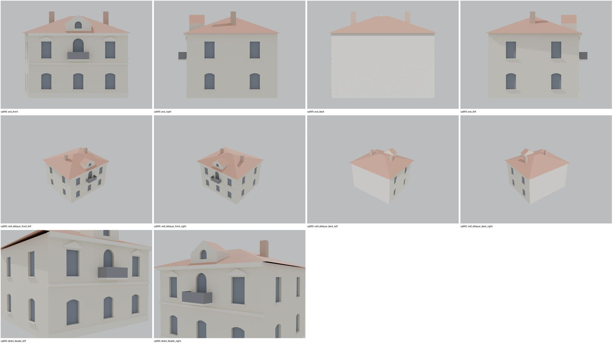

Identita domu
Dvoupodlažní neobarokní vila mezi pivovarem a parkem (plán cp_995_001: vpravo „ČS. ARMÁDY TŘ.“, vlevo „areál pivovaru, už stáčírna“). Foto cp_995_001: uliční průčelí 3 osy, v patře balkon s obloukovými dveřmi, segmentový štít s oválným oknem; cp_995_003/005 boční a zadní strana s lodžií; cp_995_002 plot.
Použité prameny: cp_995_001 PLANE; cp_995_001..005 PHOTO.
GIS: GIS id 2938 (153,5 m², obdélník 12,9 × 12,0 m). V oblasti „Cs_Armady“ je dům veden podruhé se stejnými přílohami.
Prameny (11 příloh)
Všechny přílohy domu v databázi Libuše, každá otevřená a zapsaná v plan_search.json. Stav rešerše plánů: found; situační/střešní náčrt (ruční, nekótovaný, PLANE,BW) – není stavební výkres; půdorysné rozměry z GIS nebo odhad. Kliknutím otevřete větší náhled.

situační náčrt
SHA-256 ff90c711eb3d…

fotografie
SHA-256 63fab1c2e28c…

fotografie
SHA-256 5c8cdda61e7b…

fotografie
SHA-256 db25f4e94b1a…

fotografie
SHA-256 eab17d1901a1…

fotografie
SHA-256 48ade9aafa7d…

archivní karta (rub) · výřez textu
SHA-256 3d61bdb9fde7…

archivní karta (rub) · výřez textu
SHA-256 845b41424025…

archivní karta (rub) · výřez textu
SHA-256 e7001580a4c7…

archivní karta (rub) · výřez textu
SHA-256 2ab92ef90874…

archivní karta (rub) · výřez textu
SHA-256 eb9cacb89e10…
Model
| Revize modelu | r2 (zachované revize: r1, r2) |
|---|---|
| Poloha | GIS půdorys id 2938 |
| Šířka průčelí | 12,86 m |
| Výška okapu | 8,40 m (odhad) |
| Podlaží | 2 |
| Střecha podle pramenů | nízká valba se segmentovým štítem |
| Střecha v modelu | valbová / sedlová (hřeben, valby, štíty) |
| Otvory | 15 |
| Vikýře / vedlejší hmoty | 1 / 0 |
| Polygonů | 355 |
Zdroje rozměrů, jak jsou zapsány v plánu modelu
| Rozměry | GIS id 2938 rectangle 12.86 x 11.72 m |
|---|---|
| Průčelí | photo cp_995_001: 3 axes, 1st floor balcony with arched door, pediments, segmental gable with oval window; cp_995_003/005 sides |
| Střecha | low hip + gable dormer (photo) |
Kontrola: 10 povinných pohledů

Nálezy
- 3 osy, segmentová okna přízemí, frontony, obloukové balkonové dveře s balkonem, štítový vikýř s kruhovým oknem, boční 2 osy, nízká valba, 2 komíny – odpovídá cp_995_001
- r2 list znovu otevřen: beze změn proti r1 kromě uvedených oprav (1041: axis_right nyní zvenku)
Opravy
- bez oprav
Hypotézy
Vše níže je model_hypothesis, provisional, locked: false.
- výšky odhad (přízemí 4,0, patro 3,8)
- zadní lodžie zjednodušena
- tvar střechy (nízká valba) z foto, sklon odhad
- rear loggia (photo cp_995_003) not modelled
- entrance on the garden side
- all storey heights, opening sizes and roof pitches are estimates from photographs (model_hypothesis, provisional, locked=false)
Soubory
- Model čp. 995, GLB
- Pracovní složka: F:\MOST\output\zatecka_street_claude_2026-10-17\houses\cp995\
plan_search.json,geometry_plan.json,README.md,texture_handoff_spec.json,r2/cp_995_G_r2.blend,r2/qa/qa_review.json